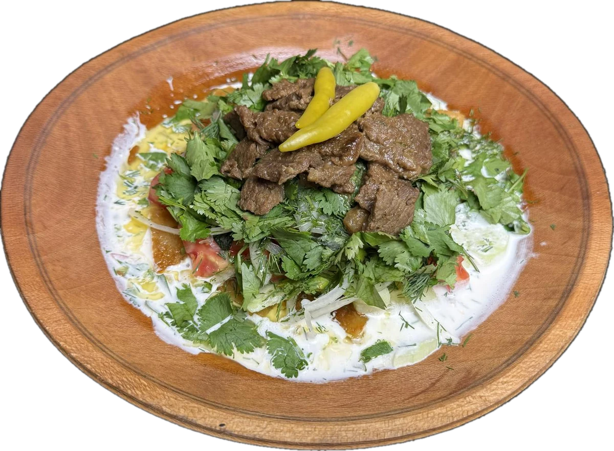
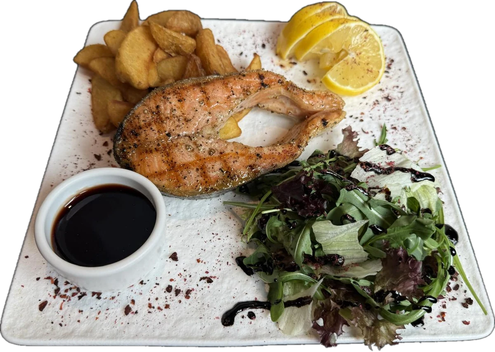

ВОСТОЧНАЯ КУХНЯ · УФА
Вкус Востока.
По-настоящему.
Блюда восточной кухни, плов и шашлык.
Уфа · улица Ленина, 30

ВОСТОЧНАЯ КУХНЯ
Восточная кухняПлов и блюда на огнеМеню ресторанаУфа
ПЛОВ ✦ МАНТЫ ✦ ШАШЛЫК ✦ ВОСТОЧНАЯ КУХНЯ

ВКУС ВОСТОКАО DONIШЕФ
Восток начинается
с гостеприимства.
Это тёплые встречи, разговоры за одним столом и блюда, которыми хочется поделиться. В DoniШеф мы готовим восточную кухню для обедов, семейных ужинов и встреч с близкими.
01Восточная кухня
02Блюда на огне
03Доставка и самовывоз
АТМОСФЕРА DONIШЕФ
Здесь встречаются
за одним столом.
Короткие видео из жизни чайханы.
Нажмите, чтобы посмотреть.
ДОСТАВКА И САМОВЫВОЗ
DoniШеф —
там, где вы.
Любимые блюда восточной кухни — для дома, офиса или встречи с близкими. Позвоните нам, чтобы оформить заказ и уточнить условия доставки.
